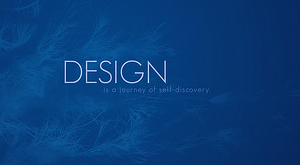

-

创意者
-
创意者
他们是创客中的精灵，他们善于发现问题，并找到改进的办法，将其整理归纳为创意和点子，从而不断制造出新的需求。
-

实施者
-
设计者
他们是创客中的魔法师，他们可以将一切创意和电子转化为详细可执行的图纸或计划。
-

设计者
-
实施者
他们是创客中的剑客，没有他们强有力的行动，一切只是虚幻泡影，而他们高超的剑术，往往一击必中，达成目标。

-
2006年
第一版开源硬件Arduino在北京被打上Flamingo EDA商标，标志着中国开源硬件运动的启蒙。
-
2008年
全球5大开源硬件供应商中的Seeedstudio和DFRobot分别在深圳和上海创立;这让艺术家能够更简单地自学成为电子和软件工程师;
-
2010年底
北京、上海和深圳的开源硬件社区陆续建立创客空间，而这些最早的开源硬件供应商也成为了创客空间的核心发起者;
-
2011年
北京创客空间发起人之一张浩在邮件中将“Maker”翻译成创客，这是创客一词首次被提出。
-
2011年10月
首届中国开源硬件大会，各地创客提议举办创客嘉年华，第一届活动在2012年4月得以成功举办。


-
2012年10月
《创客，新工业革命》一书在中国出版。同时，由硅谷兴起的硬件创业风潮，特别是智能硬件创业风席卷全球，基于硬件设备+互联网+大数据的创新应用此起彼伏。


-
2015年3月
“创客”上升到国家层面。经过李克强总理等国家各级领导对各地创客生态圈的调研，“创客”一词进入国务院工作报告，“创客“也从一个小众群体进入所有大众视线，从创客们的”创客“变成了全国的”创客“。
而在王盛林看来，中国的创客运动经过近10年的发展，接下来，将进入上承互联网和各传统产业，下接整个大众的创客链接时代。